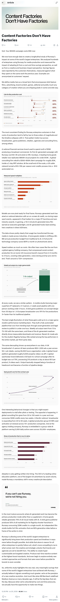
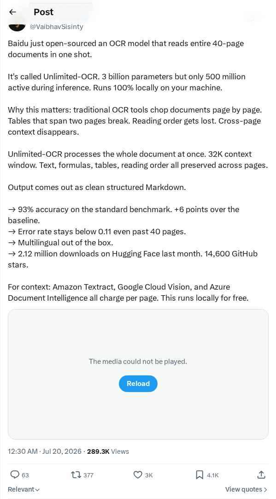
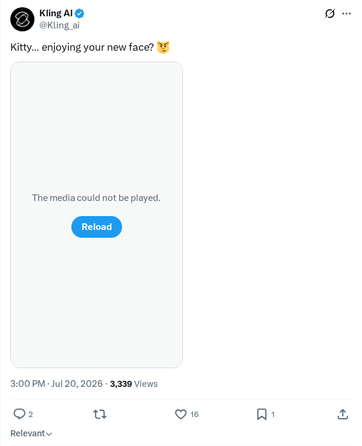

分享长周期模型的安全框架
OpenAI发布了从部署长周期AI模型中获得的关键经验和安全框架。报告详细说明了当AI系统在长时间内自主执行复杂的、多步任务时所出现的独特对齐挑战和智能体故障。为了在更广泛部署前降低这些风险，OpenAI采用了迭代部署方式，以实时环境识别此前未观测到的安全风险，从而开发出改进的评估结构和对齐防护措施，以便从短提示交互安全地过渡到自主智能体。
AI 前沿资讯、研究与趋势精选
OpenAI发布了从部署长周期AI模型中获得的关键经验和安全框架。报告详细说明了当AI系统在长时间内自主执行复杂的、多步任务时所出现的独特对齐挑战和智能体故障。为了在更广泛部署前降低这些风险，OpenAI采用了迭代部署方式，以实时环境识别此前未观测到的安全风险，从而开发出改进的评估结构和对齐防护措施，以便从短提示交互安全地过渡到自主智能体。
OpenAI发布了一项分析，详细介绍了专为长周期AI模型设计的新型安全与对齐框架。随着现代AI模型转向长时间执行多步自主任务，标准的对齐和强化学习方法必须不断演进，以防止目标漂移和非预期行为。该发布概述了评估模型在长序列动作中表现的方法，为高度自主的智能体部署提供了系统的防护措施。这些发展旨在确保复杂现实世界智能体工作流的控制与安全。
一项行业分析探讨了在阿里巴巴Qwen 3.8和月之暗面Kimi K3发布后，前沿人工智能开发的经济格局变化。报告指出，这些功能强大的中国模型通过缩小在编程、推理和多语言处理方面的差距，正在挑战西方的统治地位。分析认为，推理和训练效率的快速商品化对Anthropic的资本密集型商业模式构成了严峻挑战，标志着全球AI生态系统正发生广泛的战略变革。此次发展也在Kimi K3权重开源升级的背景下进行了讨论。
一名网络安全研究员利用被称为GPT-5.6的大语言模型，以二十五美元的成本发现了一个WordPress关键远程代码执行（RCE）漏洞。传统上，发现此类高价值安全漏洞需要大量的人工审计和领域专业知识，漏洞经纪人的收购价可达50万美元。这一成功实验证明了自主语言模型如何能以极低的运营成本自动化静态应用安全测试，同时也引入了双重风险：安全审计员和恶意攻击者均可系统地扫描代码库以获取零日漏洞。
Cursor发表了一篇文章，分析了自主智能体群体（Agent Swarms）的兴起及其对大语言模型经济格局的颠覆性影响。行业正从孤立的单次查询交互转向协作式多智能体网络，以执行复杂的工作流。这种结构性转变正在显著降低智能的边际成本，改变token消费模式，并要求高吞吐、低延迟的推理架构。文章强调了模型提供商如何调整其定价结构和系统，以优化连续、高容量的智能体计算。
Sebastian Raschka分析了通过直接控制大语言模型的推理努力程度来管理延迟和成本的技术方法。随着模型被部署于复杂的长步任务，平衡资源消耗与逻辑准确性变得至关重要。文章详细介绍了结构化生成限制、自适应推理步骤和针对性系统提示等优化技术，以动态调整生成长度和思考深度。本文展示了这些精细化控制如何允许开发人员在生产环境中根据特定的应用需求来匹配计算开支。
Eunomia的一项实证研究探讨了基于提示词（Prompt）的安全规则的局限性，并提出了用于AI智能体的分层运行时策略强制框架。由于静态系统提示词在复杂或对抗性执行场景下极易被规避，研究人员开发了一种多层安全模型。该方法利用eBPF（扩展伯克利数据包过滤器）技术将抽象的语义意图与内核级执行跟踪相结合，以实施硬性的系统级约束。将策略执行与自主智能体的推理层解耦，显著提高了安全性和可靠性。
Yang AI Lab发布了Inertia-1，这是一个开源的运动基础模型，旨在统一人类、四足动物和机器人配置的运动合成。与历史上需要为不同骨骼结构分别构建架构的流程不同，Inertia-1将物理运动数据作为统一的序列学习问题进行处理。通过实现跨实体的运动迁移和泛化，该模型旨在以类似于大语言模型的方式扩展物理运动智能。这项研究在为机器人和高级角色动画创建统一、任务无关的控制器方面迈出了重要一步。
一位开发者发布了Nativ，这是一款专为在Mac本地运行前沿开源大语言模型而优化的macOS应用程序。通过利用Apple Silicon的神经引擎和硬件架构，该平台提供了一个私密、离线的环境来执行高级生成式AI模型，无需云端依赖或订阅费用。该工具简化了直接在消费设备上下载、管理和查询复杂神经网络的过程，支持了开源权重模型的普及与离线执行。

Runway推出了Act-One，这是一款全新的生成式视频合成工具，仅需视频源和角色图像即可生成富有表现力的角色表演。该技术将人类面部表情、头部运动和情绪直接映射到数字角色上，而无需传统的动作捕捉硬件。该浏览器工具旨在保持角色一致性和情感细微差别，允许创作者、电影制作人和动画师构建高保真动画。此次发布代表了AI驱动视觉特效生产领域在易用性方面的重大进步。
Anthropic推出了一项科学研究计划，为致力于治疗罕见病的研究人员提供高达5万美元的Claude使用额度补助。该计划隶属于“AI for Science”项目，旨在利用Claude大语言模型的先进能力加速科学发现和临床突破。通过提供计算额度，Anthropic寻求帮助科研团队将生成式人工智能集成到复杂的生物医学工作流和数据分析中，重点解决传统环境下资源匮乏的罕见病领域。

百度开源了Unlimited-OCR，这是一个拥有30亿参数的光学字符识别模型，旨在单次推理中处理长达40页的文档。该模型能够处理复杂的版式和扩展文本，解决了传统OCR系统的常见故障点。通过将代码公开，百度旨在帮助金融、法律和学术研究等专业领域的开发人员和企业处理大批量文档，并通过长文档自动化文本提取简化复杂工作流。
OpenAI的一名安全负责人分享了针对长期运行、开放式人工智能系统安全性影响的研究见解。这些持久的、智能体化的模型带来了独特的安全和运营风险，而标准的长周期评估框架往往会忽略这些风险。目前的研究重点是开发专门针对在复杂环境中长时间自主运行的模型而定制的新型测试协议和危险缓解策略。这些工作旨在改善行业内针对智能体系统的风险管理框架。

Kling AI为其生成式视频平台发布了新的面部转换功能，专注于精确的角色修改和数字合成。此次更新引入了先进的特性，允许创作者以高保真度编辑和操纵数字角色的面部表情和结构特征。此版本是Kling AI更广泛计划的一部分，旨在为其生成式AI视频流水线提供精细的控制，满足那些寻求无需复杂渲染软件即可获得专业级角色的动画师和电影专业人士的需求。
Claude开发团队发布了一项关于Claude Code中发现的性能和连接问题的工程服务更新。为修复后端同步错误并恢复全部功能，建议开发人员重启本地安装程序。此即时修复是Anthropic为稳定其终端AI代理编程工具所做的持续努力的一部分，旨在确保本地客户端实例与服务当前的服务器端基础设施更新保持一致。
Google推出了更新，将其DeepMind部门的研究突破直接集成到Gemini模型生态系统中。此次优化旨在提升复杂编程、逻辑推理和多模态理解能力。通过集成架构改进，该版本旨在提高推理速度并提供更准确的输出。此次发布凸显了Google将最先进的计算模型升级部署到其消费者和企业产品中的持续战略。
研究人员发布了Loopie，这是一个结合了专家混合模型（MoE）的高性能循环Transformer系列。此次发布包括一个拥有20B参数（2B激活参数）的模型和一个拥有6B参数（0.6B激活参数）的模型。Loopie解决了循环模型历史上计算效率的局限性，在相同计算预算下表现优于标准的Transformer基准。全新的后训练流程赋予了模型先进的推理能力，使Loopie在2025年国际数学奥林匹克（IMO）和国际物理奥林匹克（IPhO）中无需外部工具即可获得金牌级表现。
研究人员以国际象棋和数学为受控测试平台，研究了预训练选择与强化学习（RL）后训练动态之间的关系。通过对500万至10亿参数的模型进行预训练，研究表明后RL性能可以从预训练损失中高度预测，RL奖励曲线的斜率随着预训练token数量的增加呈线性改善。分析显示，RL不仅是强化现有策略，它还在复杂任务中挖掘出全新的正确步骤，同时放大了在简单任务中已表现出的正确逻辑。
研究人员推出了S1-Omni，这是一款专为科学理解、预测和生成而设计的统一多模态推理模型。S1-Omni将包括CIF、SMILES、蛋白质序列、光谱和图像在内的多种科学数据模态，映射到一个符合科学定律的共享表示空间。该模型基于涵盖200个任务的数百万个推理样本的S1-Omni-Corpus进行训练，支持属性预测、结构预测和分子生成等应用。在60多个科学基准测试中，S1-Omni的大部分表现优于GPT-5.5和Gemini-3.1-Pro。
研究人员开发了Agon，这是一种竞争性强化学习框架，通过两个竞争模型实现了隐含的推理相互评分。该系统不再依赖手动流程标签或外部奖励模型，而是奖励每个在轮流作为求解者和评分者时表现出色的模型。这种设置建立了一个循序渐进的难度曲线。在基于Qwen3的DeepMath基准测试中，Agon将标准的GRPO pass@1成功率提高了一倍，证明了其在程序设计竞赛和多个模型家族中的强大性能扩展能力。
开发人员发布了RAGU，这是一个开源的GraphRAG引擎，它将知识图谱提取与整合分离，以提高检索质量。该系统采用两阶段类型提取过程、DBSCAN去重和Leiden社区检测。RAGU由Meno-Lite-0.1提供支持，这是一个优化的7B模型，在知识图谱构建任务中比Qwen2.5-32B的相对调和平均值高出12.5%。RAGU在GraphRAG-Bench（医学）上实现了高达0.84的证据召回率，并可在MIT许可下安装。
研究人员推出了Cura 1T，这是一款针对临床咨询、多模态推理、交互式诊断和电子健康记录（EHR）工具集成而设计的医疗专业化大语言模型。Cura 1T通过人类门控的自进化循环进行训练，训练智能体根据表现故障迭代计划能力、执行针对性训练并更新数据混合。在医疗基准测试中，Cura 1T在保持对域外推理和代理式任务的强泛化能力的同时，实现了相对于主要前沿基准的顶级表现。
研究人员提出了对比策略优化（CPO），这是一种专为具有可验证奖励的强化学习（RLVR）设计的正确性感知优势塑造方法。CPO利用参考引导分布与普通生成分布之间的token级对比分歧，来区分有用的不确定性与模型自身的混淆。理论和实证评估表明，这种对比分歧是一种可靠的正确性信号，解决了零优势问题，并在域内和域外的推理基准测试中持续优于基于熵的RLVR基准。
研究人员开发了DSWorld框架，建立了一个数据科学世界模型以加速自主数据科学智能体的发展。通过预测受操作条件限制的环境状态转换，DSWorld用模拟预测取代了昂贵的试错执行。该框架具有结构化状态构建、成本感知路由和反射式世界模型优化功能。在实验测试中，DSWorld将基于强化学习的智能体训练加速了14倍，搜索式推理加速了3到6倍，同时在状态转换预测任务中比顶级LLM基准高出35.6%。